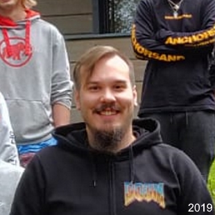
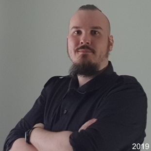
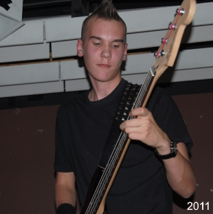

I am a junior game developer, currently studying video game programming and design in Kajaani University of Applied Sciences. Just a few years ago I would not have believed I would be getting into the trade of making games, even when my earliest experiences at the age of fifteen with Flash 8’s action script and mapping with Hammer editor paved the way for it.

Video games have always fuelled my fire and perfectly combine all my interests: mathematics, graphical art, music and most importantly storytelling. In Kajaani I main my studies in the programming of games, as I believe it’s the most fundamental part of interactive software development, yet I have taken every chance I have been given to learn designing the best games.

I was born in the rural town of Sodankylä, which I left only after graduating from the local high school and completing military service. Growing up I absorbed incredible amounts of video gaming insight playing everything I got my hands on. From dated hand-me-down 8-bit machines and MS-DOS games to the Xbox 360 games I bought when I started to earn my own wages. When I was not playing, I was loving winter sports or practicing with any metal band I was in at the time.
Languages:
- CSS, C++, C#, HTML, Java, SQLite
Programs:
- Android Studio, Git, MS Office, MS Visual Studio, Unity, Unreal Engine
Associations:
- Kajak Games, Board Member, May 2019 – Present
- IGDA Kajaani Hub, Volunteer, February 2018 – Present